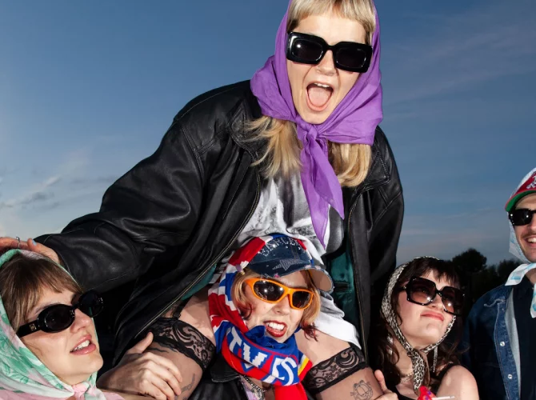

Panic Shack is a Cardiff-based punk band known for their raw energy, sharp lyrics, and unapologetic attitude. Their music blends punchy riffs, catchy hooks, and a DIY spirit, earning them a growing reputation in the UK punk scene.
Panic Shack's music is a fiery mix of punk rock and indie energy, characterized by their witty, socially conscious lyrics and electrifying live performances. Their unapologetic style and DIY ethos have made them a standout act in the UK punk revival.
It's great that the current punk revival gives plenty of space to the female gaze, and one of the finest examples of this is undoubtedly Panic Shack. Four girls and one guy, known as party animals through and through, but in their guitar tracks spiced with electronics, they also take a stand against toxic behaviors like sexism and unwanted advances. Above all, the Welsh band from Cardiff narrates everyday female struggles, set against a backdrop of roaring riffs and pounding rhythms, with a cheerful bubblegum dress sense to top it off. Image by Ren Faulkner
Goed dat ook de huidige punkrevival ruim baan biedt aan de female gaze, en een van de fijnste voorbeelden daarvan is zonder twijfel Panic Shack. Vier meiden en één guy die dan wel te boek staan als feestbeesten pur sang, maar in hun met elektronica gekruide gitaarsongs ook zeker ten strijde trekken tegen toxisch gedrag als seksisme en handtastelijkheden. Maar vooral verhaalt de Welshe band uit Cardiff over dagelijkse vrouwenongemakken, tegen een decor van razende riffs en rammende ritmes, met een vrolijke kauwgomballen-dress sense toe. Beeld door Ren Faulkner
5
♀️ Female
No